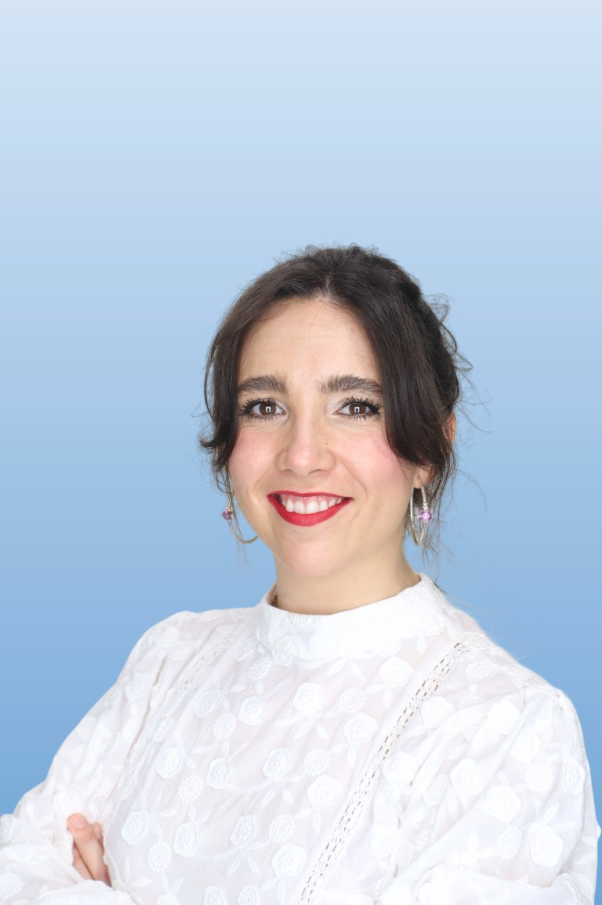
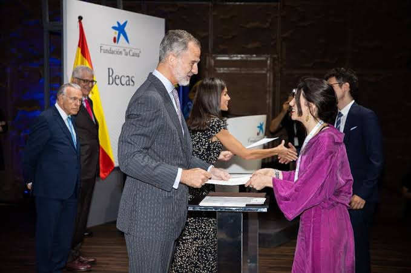

Applied mathematics & mechanics
- Continuum mechanics
- Tensor algebra
- Finite deformation kinematics
- Constitutive modeling
- Finite element methods
- Numerical integration

Portrait · photo.jpg
ENGINEER / RESEARCH SCIENTIST
Ph.D. candidate, Bioengineering · Georgia Tech
M.S. Computer Science · Machine Learning
I develop scientific ML methods to build engineering systems that infer mechanical states and material properties from complex measurements, combining computational mechanics, computer vision and biological insight.
RESEARCH FOCUS
I use neural networks within mechanics-based formulations to solve nonlinear inverse problems, from mathematical development and numerical implementation to experimental validation.
Scientific ML to accelerate computational mechanics.
DOCTORAL RESEARCH
My doctoral research develops an end-to-end computational framework for estimating ocular tissue mechanical properties from optical coherence tomography (OCT). I combine volumetric imaging, finite element mechanics and neural virtual fields to infer constitutive parameters from measured deformation and applied loading.
The objective is to characterize tissue mechanics noninvasively and investigate mechanical changes associated with glaucoma.
Swipe horizontally to follow the full workflow.

TECHNICAL EXPERTISE
I formulate mechanics-based models for complex physical systems, with expertise in continuum mechanics, tensor mathematics, constitutive modeling, and finite element methods. I develop scientific ML algorithms and computational tools to solve nonlinear inverse problems and extract physical information from complex measurements.
THE RESEARCH ATLAS
Explore my research by discipline, from original computational methods to applications in imaging and tissue mechanics.
METHOD DEVELOPMENT · FIRST AUTHOR
Discovering virtual fields with neural networks.
I developed a mechanics-based inverse framework in which neural networks approximate virtual fields, rather than directly predict constitutive parameters. The principle of virtual work connects full-field deformation measurements and applied loading to material identification.
Journal manuscript under review · WiML workshop at NeurIPS 2026 (as listed in CV)
THE CONTRIBUTION
Mathematical formulation, neural function approximation, boundary-condition enforcement and numerical implementation for inverse identification of hyperelastic materials.
WHAT COMES NEXT
Extend the formulation to heterogeneous materials, uncertainty-aware inference and a broader range of experimental loading conditions.
METHOD TRANSLATION · ONGOING RESEARCH
From biomedical images to mechanical properties.
I am extending neural virtual fields to experimental image-derived displacement measurements. Variance-minimizing test functions aim to improve material parameter identification when volumetric imaging and displacement measurements contain noise.
Ongoing doctoral research
THE CONTRIBUTION
Connect volumetric image analysis, full-field deformation, finite element kinematics and mechanics-based inverse inference.
WHAT COMES NEXT
Validate against independent mechanical measurements and quantify uncertainty in image-derived material properties.
PUBLISHED RESEARCH · CO-FIRST AUTHOR
Menopause, aging and the extracellular matrix.
In our 2024 Vision Research paper, we examined how age and surgical menopause alter gene expression in the posterior eye (sclera and optic nerve head) and retina. Bulk RNA sequencing and pathway analysis revealed age-dependent changes in extracellular matrix remodeling, TGF-β signaling and immune processes.
Vision Research 225, 108507 (2024)

THE CONTRIBUTION
Co-first-author study integrating differential expression (DESeq2), Gene Ontology enrichment and gene set variation analysis (GSVA) across young and middle-aged sham and ovariectomized rats.
RNA-seq dataset · GSE272170 ↗WHAT COMES NEXT
My next step is to pair transcriptomic profiles with experimentally measured mechanical properties from matched tissues. I aim to develop scientific ML models that integrate molecular features and mechanical measurements within physically grounded formulations, to identify molecular signatures associated with tissue stiffness and constitutive behavior.
PUBLISHED RESEARCH · FIRST AUTHOR
Making tissue structure measurable from OCT.
I developed deep learning methods for segmentation of preclinical optical coherence tomography images following retinal ganglion cell injury. This work supports quantitative characterization of tissue layers and the anatomical inputs required for image-based biomechanics.
Translational Vision Science & Technology 14(2), 4 (2025)
THE CONTRIBUTION
Developed and evaluated segmentation approaches for biomedical imaging, including retinal layer, choroidal and scleral segmentation. Related work includes DeepRetNet 2.0, reported at ARVO.
WHAT COMES NEXT
Integrate robust segmentation and image-derived deformation into automated mechanical characterization workflows.
COLLABORATIVE RESEARCH · WORKSHOP
Modality-specialized vision-language learning.
Collaborative research on modality-specialized mixture-of-experts models for medical vision-language understanding. This project complements my scientific ML and computer vision work with experience in multimodal model development.
CVPR MMFM-BIOMED workshop, 2025
THE CONTRIBUTION
Co-author and collaborator in medical vision-language model research.
WHAT COMES NEXT
Explore multimodal learning for scientific data, while retaining domain-specific constraints and interpretability.
FUTURE RESEARCH / ENGINEERING FRONTIERS
I aim to develop efficient, interpretable methods that enable systems to infer mechanical states and material properties from their interactions with the physical world.
RESEARCH OPPORTUNITY
Infer tissue stiffness from observed deformation and interaction forces to support mechanically informed surgical manipulation.
SCIENTIFIC RECORD
Journal articles, work in progress, workshop contributions and conference abstracts are listed separately. Google Scholar ↗
Sánchez-Rodríguez, Lou, Pardue & Feola
TVST 14(2), 4 · First author
Prokai-Tatrai et al.
International Journal of Molecular Sciences 26(5), 1846
Wong*, Sánchez-Rodríguez*, Ethier, Wood & Feola
Vision Research 225, 108507 · Co-first author
Bahrani Fard et al.
Experimental Eye Research 234, 109602
Goyal et al.
TVST 12(3), 9
Gerberich et al.
Biomaterials 271, 120735
Sánchez-Rodríguez, Sampaio de Oliveira, Nguyen & Feola
Under review · First author
Sánchez-Rodríguez, Jiang, Bales, Wood & Feola
In preparation · First author
Hall, Sánchez-Rodríguez, Wood & Feola
Under review
Haupt et al.
bioRxiv · Preprint, under review
Sánchez-Rodríguez, Sampaio de Oliveira, Nguyen & Feola
WiML workshop, NeurIPS · Atlanta · Workshop contribution
Chopra, Sánchez-Rodríguez, Mao, Feola, Li & Kira
CVPR MMFM-BIOMED workshop · Workshop contribution
Sánchez-Rodríguez, Jiang, Bales, Wood & Feola
ARVO / IOVS · Conference abstract
Sánchez-Rodríguez, Lou, Pardue & Feola
ARVO / IOVS 66(8), 2173
Sharma et al.
ARVO / IOVS 66(8), 6314
Sánchez-Rodríguez, Jiang, Bales, Wood & Feola
BrightFocus Foundation Glaucoma Research Symposium
Sánchez-Rodríguez, Eum & Feola
ARVO / IOVS 65(7), 2324
Bales et al.
ARVO / IOVS 65(7), 1267
Sánchez-Rodríguez, Wong, Wood & Feola
ARVO / IOVS 64(8), 406
Wong, Sánchez-Rodríguez, Ethier, Wood & Feola
ARVO / IOVS 64(8), 404
Sánchez-Rodríguez et al.
ISER/BrightFocus Glaucoma Symposia
Goyal et al.
ARVO / IOVS 62(8), 1012
Ethier et al.
ARVO / IOVS 62(8), 2346
Jiménez, Sánchez-Rodríguez, Jiménez-Gambín, Andrés et al.
JASA 149(4 Supplement), A18
Sánchez-Rodríguez, Jiménez, Jiménez-Gambín & Camarena
51st Spanish Congress of Acoustics (Tecniacústica)
Feola, Sánchez-Rodríguez, Jiang & Dattilo
In preparation · What Every Glaucoma Specialist Needs to Know About Biomechanics, Kugler Publications
* Equal contribution. Publication status follows the supplied CV; workshop contributions and conference abstracts are not counted as journal articles. Full author lists are available in the CV.
SELECTED RECOGNITION
International doctoral fellowship supporting outstanding Spanish and Portuguese graduates.

Merit-based recognition for exceptional academic achievement among women pursuing graduate study.
ADDITIONAL RECOGNITION
Teaching assistant in biofluid mechanics; founder and lead of MolVis Media Initiative; former Women in Bioengineering chair and professional development chair. I value building research environments that foster technical independence and collaboration.